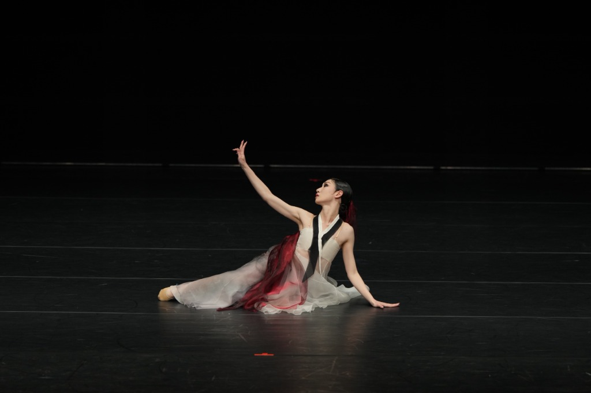

춤마루 이야기
무대와 연습실에서 20년을 살아온 무용수가 세운 회사. 몸으로 익힌 미감에서 모든 디자인이 시작됩니다.
우리의 미션
한국 전통무용은 유리장 안에 보존할 유물이 아닙니다. 그것은 살아 있는 몸의 언어입니다.
춤마루는 그 언어를 오늘의 디자인으로 옮깁니다. 무용수의 하루에서 출발한 브랜드 MU:V, 배움을 돕는 앱 MU:ON, 누구나 들어올 수 있는 춤 DNA. 한국무용이 많은 사람의 일상 속으로 스며들어 새로운 문화를 만드는 것, 그것이 춤마루의 지향점입니다.
창업자, 20년을 춤춘 사람

춤마루는 무대와 연습실에서 살아온 한국무용수의 오랜 경험에서 출발했습니다. 무용수로 사는 동안, 정작 무용인의 일상을 위한 물건은 어디에도 없었습니다. 예쁜 것은 작았고, 큰 것은 아름답지 않았습니다.
만든 사람이 가장 까다로운 사용자였습니다.
이건 기획이 아니라, 20년간 겪은 절박함이었습니다.
무용수가 디자인을 하는 것은 낯선 도전이 아니라 자연스러운 확장입니다. 그래서 춤마루의 디자인은 무용수가 직접 겪은 하루에서 출발합니다.
전통의 깊이, 기본 동작
한국무용의 18가지 정서
우리의 전문성
전문 무용수 협업
모든 동작은 전문 한국무용수와 함께 촬영·검증됩니다. 근사치가 아닙니다.
AI 연구
자세 추정과 시계열 감정 모델을 자체 설계·학습합니다.
특허 포트폴리오
동작 분석·진단 방식은 성장하는 특허 포트폴리오로 보호됩니다.
정제 데이터셋
자체 도구로 구축한 한국무용 3D 스켈레톤 라벨 데이터셋.
걸어온 길
무대에서 브랜드까지
하나의 일관된 줄기. 본질은 지키고, 매체는 바꾼다.
- 무대, 20년무용수로 살아온 시간. 선, 여백, 절제를 몸으로 익혔습니다.
- 디자인: MU:V첫 프로젝트, 가방. 무용수의 하루에서 출발해 정중동(靜中動)을 설계 원리로 삼았습니다.
- 확장, 지금앱 MU:ON과 춤 DNA, 그리고 자체 AI 연구가 미감을 뒷받침합니다.
전통을 디지털화하지 않습니다. 계속 숨 쉬게 합니다.
춤마루의 철학